trackers package¶
Submodules¶
trackers.tracker module¶
Module containing all the elements to track the RF frequency and phase and the beam in phase space.
| Authors: | Helga Timko, Alexandre Lasheen, Danilo Quartullo |
|---|
- class trackers.tracker.FullRingAndRF(RingAndRFSection_list)¶
Bases: object
Definition of the full ring and RF parameters in order to be able to have a full turn information (used in the hamiltonian for example).
- RingAndRFSection_list = None¶
List of the total RingAndRFSection objects
- potential_well = None¶
Total potential well in [V]
- potential_well_coordinates = None¶
Total potential well theta coordinates in [rad]
- potential_well_generation(turn=0, n_points=100000.0, main_harmonic_option='lowest_freq', theta_margin_percent=0.0)¶
Method to generate the potential well out of the RF systems. The assumption made is that all the RF voltages are averaged over one turn. The potential well is then approximated over one turn, which is not the exact potential. This approximation should be fine enough to generate a bunch (the mismatch should be small and damped fast enough). The default main harmonic is defined to be the lowest one in frequency. The user can change this option if it is not the case for his simulations (other options are: ‘highest_voltage’, or inputing directly the value of the desired main harmonic). A margin on the theta array can be applied in order to be able to see the min/max that might be exactly on the edges of the frame (by adding a % to the length of the frame, this is set to 0 by default. It assumes also that the slippage factor is the same in the whole ring.
- ring_circumference = None¶
Ring circumference in [m]
- ring_radius = None¶
Ring radius in [m]
- track(beam)¶
Loops over all the RingAndRFSection.track methods.
- class trackers.tracker.RingAndRFSection(RFSectionParameters, Beam, solver='simple', PhaseLoop=None)¶
Bases: object
Definition of an RF station and part of the ring until the next station, see figure.

The time step is fixed to be one turn, but the tracking can consist of multiple RingAndRFSection objects. In this case, the user should make sure that the lengths of the stations sum up exactly to the circumference or use the FullRingAndRF object in order to let the code pre-process the parameters. Each RF station may contain several RF harmonic systems which are considered to be in the same location. First, the energy kick of the RF station is applied, and then the particle arrival time to the next station is updated. The change in RF phase and frequency due to control loops is tracked as well.
- PL = None¶
Import PhaseLoop object
- acceleration_kick = None¶
Synchronous energy change 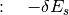
- alpha_order = None¶
Import alpha order (from RFSectionParameters)
- beam = None¶
Import of Beam object
- counter = None¶
Import counter (from RFSectionParameters)
- drift()¶
Update of particle arrival time to the RF station. If only the zeroth order slippage factor is given, ‘simple’ and ‘full’ solvers are available. The ‘simple’ solver is somewhat faster. Otherwise, the solver is automatically ‘full’ and calculates the frequency slippage up to second order.
The corresponding equations are:
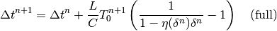
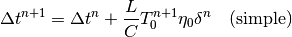
- eta_0 = None¶
Slippage factor (0th order) for the given RF section
- eta_1 = None¶
Slippage factor (1st order) for the given RF section
- eta_2 = None¶
Slippage factor (2nd order) for the given RF section
- harmonic = None¶
Import RF harmonic number program (from RFSectionParameters)
- kick()¶
Update of the particle energy due to the RF kick in a given RF station. The kicks are summed over the different harmonic RF systems in the station. The cavity phase can be shifted by the user via phi_offset. The main RF (harmonic[0]) has by definition phase=0 at time=0. The phases of all other RF systems are defined w.r.t. to the main RF. The increment in energy is given by the discrete equation of motion:
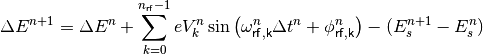
- length_ratio = None¶
Import length ratio (from RFSectionParameters)
- n_rf = None¶
Import the number of RF systems (from RFSectionParameters)
- omega_RF = None¶
Import actual RF frequency [1/ns] (from RFSectionParameters)
- phi_RF = None¶
Import RF phase [rad] (from RFSectionParameters)
- phi_noise = None¶
Import RF phase noise [rad] (from RFSectionParameters)
- rf_params = None¶
Import of RFSectionParameters object
- section_index = None¶
Import section index (from RFSectionParameters)
- solver = None¶
- Choice of drift solver options
- t_rev = None¶
Import revolution period (from GeneralParameters)
- track()¶
Tracking method for the section. Applies first the kick, then the drift. Calls also RF feedbacks if applicable. Updates the counter of the corresponding RFSectionParameters class and the energy-related variables of the Beam class.
- voltage = None¶
Import RF voltage program [GV] (from RFSectionParameters)
Equations of Motion¶
| Authors: | Helga Timko |
|---|
Below, we shall derive the equations of motion (EOMs) for an energy kick given to the particle by the RF caviti(es) of a given RF station and the subsequent drift of the particle during one turn, see Figure. In the case of multiple RF stations, the drift equation should be scaled by 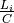, where 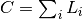 is the machine circumference.
Definitions¶
Code-internal units are SI-units unless otherwise specified in the below table.
| Code-internal units: | |
|---|---|
Energy Momentum Mass Time Frequency Revolution frequency |
|
 = [MeV]
= [MeV] = [MeV]
= [MeV] = [ns]
= [ns] = [GHz]
= [GHz] = [1/ns]
= [1/ns]Just like in the real machine, we demand the user to define beforehand the momentum programme, i.e. the synchronous (design) momentum at every time step  and RF station 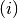, 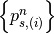. This will define the design total energy 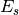 through following relations:
and RF station 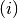, 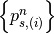. This will define the design total energy 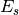 through following relations:
(1)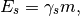
(2)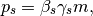
(3)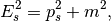
where  is the mass of the particle, and energy, momentum, and mass are given in [MeV].
is the mass of the particle, and energy, momentum, and mass are given in [MeV].
For a given synchronous orbit with an average radius 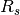, the revolution period will be 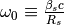 and one turn will take 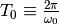 at the synchronous energy. The magnetic field programme is assumed to be synchronised with the design energy turn by turn. Hence, a particle leaving the RF station with the synchronous energy will always be on the synchronous orbit and return to the RF station after exactly one period, unless the actual magnetic field differs from the designed one.
We define then an external reference (clock) time
(4)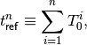
and as initial condition we choose the sinusoidal RF wave of the main RF system (harmonic  and RF frequency 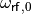) to be at phase zero at time zero:
and RF frequency 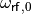) to be at phase zero at time zero:
(5)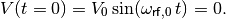
All phase offsets of all RF systems are defined w.r.t. this initial condition and w.r.t. to the main RF system. Phase offsets can be programmed through the phi_offset parameter. For 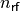 RF systems in the RF station the total voltage [MeV] becomes:
(6)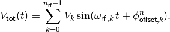
We define the arrival time of an arbitrary particle to the RF station relative to the reference time in that turn,
(7)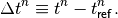
Energy kick¶
During the passage through an RF station, the energy 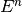 of an arbitrary particle is changed by the total energy kick received from the various RF systems in the station. The energy gain due to the induced electric fields in the magnets is negligible and beam-induced voltage is taken into account in the impedace module. Whatever the RF phase 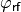 and revolution frequency 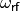 in the different RF systems may be, the energy kick for a particle arriving at time 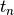 is:
(8)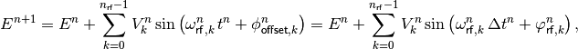
where the RF phase of system k in turn n 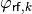 is defined as
(9)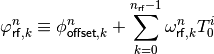
As multiples of  can be neglected, an equivalent form is:
can be neglected, an equivalent form is:
(10)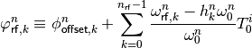
Note
Eq. (8) is intrinsically discrete; no approximation has been done.
Note
The RF phase (Eq. (10)) differs from the phase offset only if the RF frequency differs from the design RF frequency 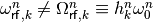, i.e. when feedback loops are active.
Rather than the absolute energy, we are actually interested in the energy offset of a given particle w.r.t. the synchronous energy  . So we choose our coordinate system to be centred around 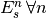. Substracting 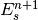 from both sides of Eq. (8), we arrive at
. So we choose our coordinate system to be centred around 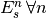. Substracting 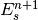 from both sides of Eq. (8), we arrive at
(11)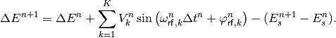
Warning
As a consequence, during acceleration the coordinate system is non-inertial and a coordinate transform is done turn by turn.
Arrival time drift¶
The absolute arrival time of an arbitrary particle can be expressed as a recursion
(14)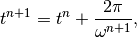
with initial condition 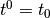 and where the revolution frequency of the particle 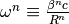 can differ from 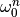 due to energy and orbit deviations from the synchronous particle.
Note
Eq. (14) contains 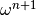 as we chose to perform the energy kick first and the subsequent time drift happens according to the already updated energy.
Using Eq. (7), the recursion on the particle arrival time relative to the clock becomes
(15)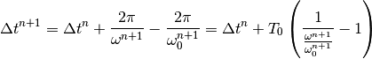
Using definition (12), the arrival time drift can be calculated as
(16)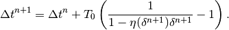
If a zeroth order slippage is used, 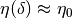, the option solver = 'simple' can be used to approximate the above equation as
(17)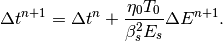
The synchronous particle¶
A particle is synchronous in turn n if it enters and leaves the RF station with zero energy offset, 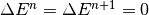, and thus gains exactly the designed energy gain 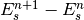. As a consequence, in the absence of induced voltage the synchronous particle will fulfil:
(18)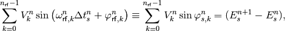
and in the presence of intensity effects, the induced voltage from the particles in front should be added on the left-hand side:
(19)
where  is the beam/bunch profile and
is the beam/bunch profile and  the wake potential.
the wake potential.
Warning
In general, these equations have solutions. If the synchronous energy gain changes from one turn to another, also the synchronous particle changes with it.
Note
Synchronous particle arrival time
As a consequence, the arrival time of the synchronous particle is not necessarily constant, but can change turn by turn. This might be counter-intuitive, as the synchronous particle drifts with exactly along the ring. To see this effect, consider two subsequent turns with different synchronous energy gains in a single-RF system. Let particle 1 be synchronous in turn n and particle 2 be synchronous in turn n+1:
(20)
(21)
The arrival time of the synchronous particles in this case will be:
(22)
Thus, because the synchronous particle can be a different particle each turn, the recursion on the synchronous arrival time becomes in general
The difference in arrival time of the two particles in turn n can be determined from the energy equations
which in first-order approximation (see Small-amplitude oscillations) gives
Small-amplitude oscillations¶
Assuming a single-RF station and a simple solver (Eq. (17)), the EOMs in continous time can be written as
(23)
(24)
Assuming further a constant synchronous phase and expanding the RF wave around it
we obtain for the sinusoidal term in first order
Derivating Eq. (23) a second time, and using Eq. (24)
(25)
Vice versa, derivating (24) another time, and substituting Eq. (23), an equivalent equation can be found for the arrival time w.r.t. to the arrival of the synchronous particle :
(26)
Equations (25) and (26) describe an oscillating motion in phase space if , which for has the synchrotron frequency
(27)
Note
that energy and time are conjugate variables, whereas energy and phase are not. When forming time derivatives in phase, one should take into account the frequency correction from one turn to another: .
trackers.utilities module¶
Utilities to calculate Hamiltonian, separatrix, total voltage for the full ring.
| Authors: | Danilo Quartullo, Helga Timko, Alexandre Lasheen |
|---|
- trackers.utilities.hamiltonian(GeneralParameters, RFSectionParameters, Beam, dt, dE, total_voltage=None)¶
Single RF sinusoidal Hamiltonian. For the time being, for single RF section only or from total voltage. Uses beta, energy averaged over the turn. To be generalized.
- trackers.utilities.is_in_separatrix(GeneralParameters, RFSectionParameters, Beam, dt, dE, total_voltage=None)¶
Condition for being inside the separatrix. For the time being, for single RF section only or from total voltage. Single RF sinusoidal. Uses beta, energy averaged over the turn. To be generalized.
- trackers.utilities.separatrix(GeneralParameters, RFSectionParameters, dt, total_voltage=None)¶
Single RF sinusoidal separatrix. For the time being, for single RF section only or from total voltage. Uses beta, energy averaged over the turn. To be generalized.
- trackers.utilities.total_voltage(RFsection_list, harmonic='first')¶
Total voltage from all the RF stations and systems in the ring. To be generalized.